(image sourced from cocktavern)
Review
“We had pints and a meal here; service was excellent, food was good and fairly priced and ambiance was nice Pub. Came back in evening for a pint and to watch football games. I recommend this Tavern and look forward to returning.”